Overview
ReLeaf is synthetic biology, plant experimentation, optogenetic control, continuous monitoring and membrane bioreactor engineering working as one chain, so we tested it as a chain: make the protectants, measure what they do to a plant, control the biology with light, follow the culture, release protectant through the bioreactor, and keep engineered Bacillus subtilis inside it.
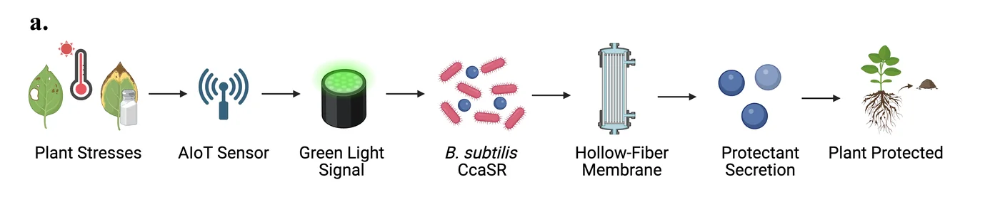
| State | What it means here |
|---|---|
| Measured | A number exists, it came off our own bench, and this page shows it. |
| Partial | Something was observed. It does not carry the claim the stage has to make. |
| Designed | The thing exists and works as an apparatus. Nothing has tested what it was built to test. |
Can weather and sensor data become a light command?
Never reached a culture 3 Construct assemblyWere the genetic constructs built as designed?
Sequence confirmed 4 Light deliveryCan the array deliver a controlled optogenetic signal?
No induction curve 5 Culture monitoringCan the inline photometer follow culture density?
Linearity only 6 Protectant functionDo the protectants improve a plant's stress response?
Injury only 7 Whole systemCan the reactor grow cells, hold pressure and release protectant?
Growth, not release 8 ContainmentDo the engineered cells stay behind the membrane?
One platingStress signal
Can weather and sensor data be turned into a decision to switch the light on?
This stage is computation, and it never touched a bench. Weather records, field sensors and a satellite-derived picture of where Taiwanese farmland sits are folded into a stress index, the index is projected forward, and the projection decides whether a green channel should be driven. Every part of it was written, run on real data, and reported where it belongs: the stress index and the optogenetic kinetics on Math Model, the forecasting and the measurement trust layer on Digital Twin, and the land, farm-size and farmer-age layers on Geospatial Analysis. Those three pages carry the numbers and the error bars.
No forecast has driven a light, and no light driven by a forecast has reached a culture, so the command path from the model to the array has never been tested end to end. It cannot be until the light stage has an induction curve, which is why this stage is marked partial for a gap downstream of it.
Construct assembly
Can our engineered B. subtilis produce the intended protectants?
After stress detection and the light signal comes production. Engineered B. subtilis is the chassis, and the genetic design is split into four functional modules so a failure can be located and rebuilt without touching the rest. Before any protein work, the constructs had to be shown to be assembled as designed.
Every module was assembled with the SubtiToolKit Golden Gate system [3]. Part-by-part detail, sequences and registry numbers are on Parts.
Colony screening
Colony PCR was used as an initial screening step to identify colonies containing inserts of the expected size. Colonies showing bands at the expected sizes were selected for further verification.
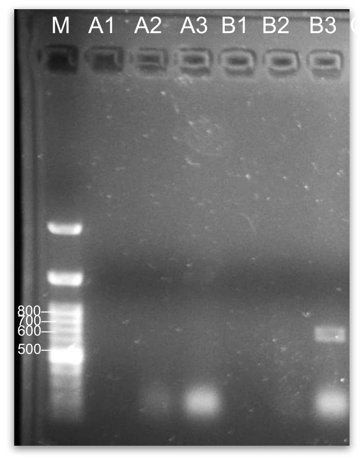
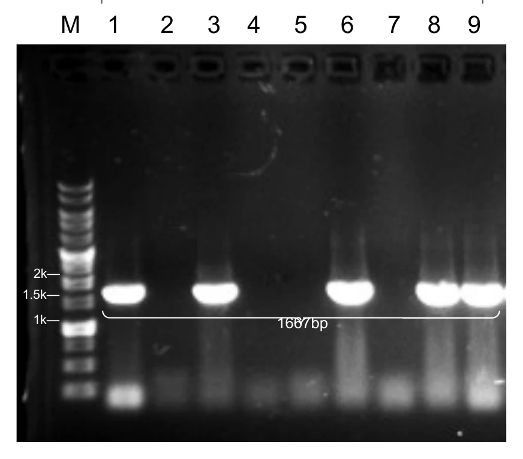
Amplicon verification
Selected constructs were then amplified using construct-specific primers to further confirm the presence of the intended DNA fragments. Bands corresponding to the expected amplicon sizes supported successful assembly of the target constructs.
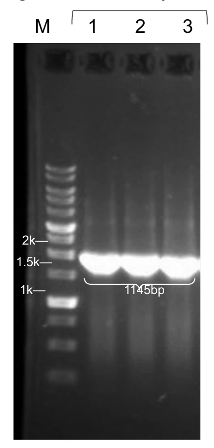
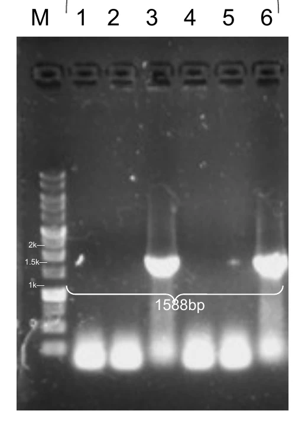
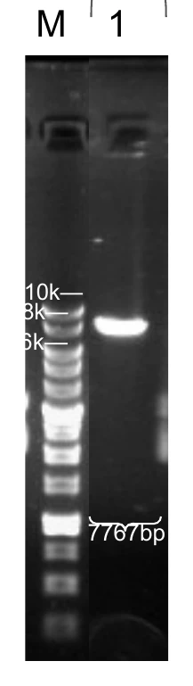
Sequencing record
To confirm construct identity at the sequence level, selected plasmids were submitted for sequencing. Sequencing results were compared against the intended construct design to confirm the presence and order of the expected genetic elements.
Thirteen Level-1 modules were attempted. Nine of them carry both a named clone and a sequencing date, and those nine are the ones any claim on this wiki rests on. Three are recorded as failures and one never produced a clone at all, which is why the shoot-side protectants and the galactan module do not appear further down this page.
| Module | Level-1 construct | Clone | Colony PCR | Sequenced |
|---|---|---|---|---|
| A | PtagC+RBS-Ho1:PcyA-L3S2P21 | A1, A2, A3 | 30 Jul | 31 Jul |
| B | PliaG-RBS0-CcaSm3-B0015 | B2 | 24 Jun | 3 Jul |
| C | PlepA-RBS0-CcaSm3-B0015 | C6, C9 | 22 Jul | 24 Jul |
| D | Pveg-RBS0-ccaR-B0015 | B2, B4 | 26 Jun | 1 Jul |
| E | PcpcG2-veg-EEBD-RBS0-Csn-AmilCP-B0015 | G3 | 24 Jun | 3 Jul |
| F | Pveg-EEBD-RBS0-Csn-AmilCP-B0015 | H10 | 26 Jun | 3 Jul |
| G | PcpcG2-veg-EEBD-RBS0-Csn:LEA-B0015 | Unsuccessful | ||
| H | Pveg-EEBD-RBS0-Csn:LEA-B0015 | No clone and no date on record | ||
| I | PcpcG2-veg-EEBD-RBS0-Csn:ACCD-B0015 | I3, I6 | 27 Jul | 28 Jul |
| J | Pveg-EEBD-RBS0-Csn:ACCD-B0015 | J9 | 27 Jul | 28 Jul |
| K | Pveg-EEBD-RBS0-SamyQ-TAT-HA-AmilCP-B0015 | D10, D14 | 9 Jul | 14 Jul |
| L | 3P-EEBD-RBS0-GanA-Gala-L3S2P21 | Unsuccessful | ||
| M | PcpcG2-veg-EEBD-RBS0-GanA-Gala-L3S2P21 | Unsuccessful | ||
Clone I6 is flagged in the build record as one the team could not locate afterwards, so module I is effectively a single usable isolate. Work on the protectant variants continued into late August and early September, with SamyQ-ACCD and SamyQ-LEA fusions sequenced at Level 0 on 19 and 20 August and their Level-1 assemblies on 26 August and 3 September. Those are on Parts.
Level-2 assembly
Level 2 puts four Level-1 transcription units on one backbone: the bilin pathway, the CcaS sensor, CcaR, and the light-driven ACC deaminase output. The device is checked by amplifying across each internal junction with a primer pair specific to that junction, so a clone is only called positive when all three junctions give a product at the expected size.
The 19 September gel runs the full check. Three independent ACDI clones, X1, X3 and X9, were amplified across all three junctions on one gel, nine lanes, and every lane carries a band where it should. Junction A is L2 pcyA F against L2 CcaSm3 R at 375 bp, junction B is L2 CcaSm3 F against CcaR R at 632 bp, and junction C is CcaR F against Csn R at 661 bp.
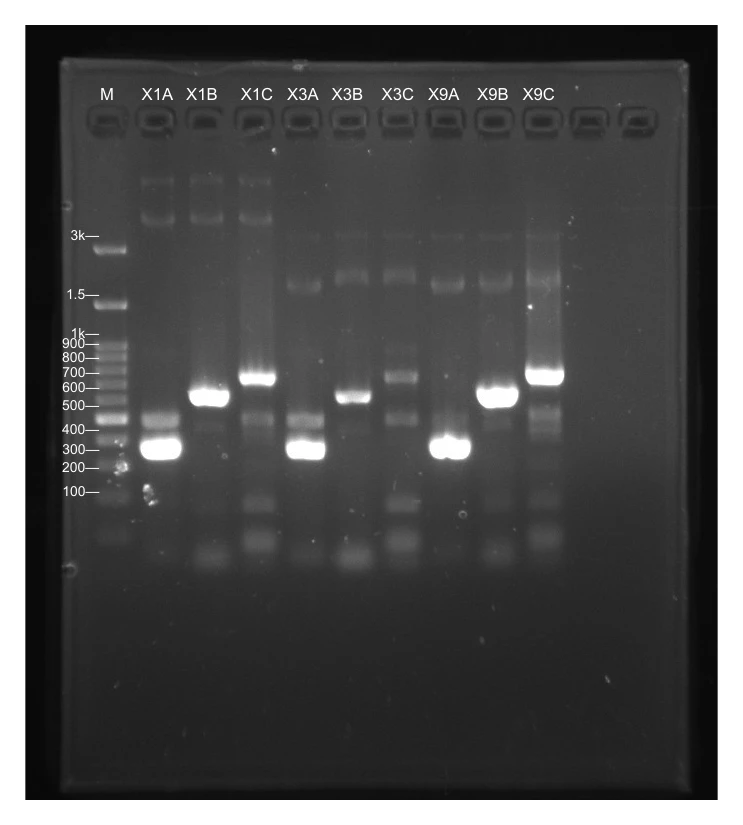
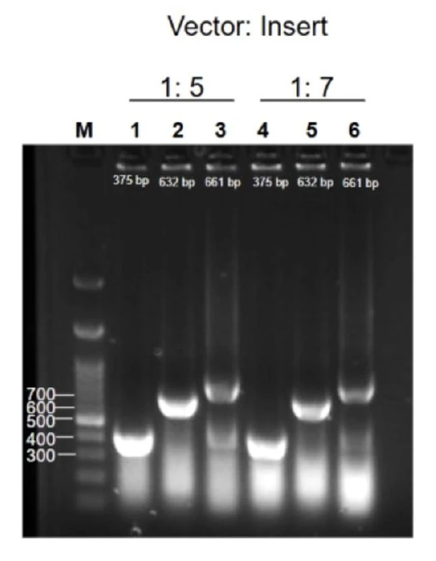
A second Level-2 device exists and it appears nowhere else on this wiki. ABDI carries the same four modules with the PliaG version of the CcaS unit in place of PlepA, and clone V7 was called positive on colony PCR on 1 September. Its junction checks are spread across separate gels, so it is a weaker record than ACDI even though the device was built.
The build record leaves the Level-2 sequencing date blank for both devices as of 23 September. A junction check establishes that the modules sit in the right order with the right joins, and the bases between them remain unread.
Together, colony PCR, PCR verification, and sequencing provided multiple levels of evidence that the genetic constructs were assembled as intended before being introduced into downstream expression experiments.
Light delivery
Can the light plate deliver a controlled signal for optogenetic activation?
ReLeaf depends on light as the external control signal connecting environmental prediction to biological production. We therefore tested the light plate to determine whether it could provide reproducible illumination across the culture area.
In our design the prediction reaches the cells as green photons at 520 nm through the CcaS/CcaR two-component system, with red at 660 nm to stop production [1, 2]. We built a dedicated array for it, DiOPAL, described in full on Hardware: twenty-four tubes over twenty-four LEDs in a light-tight box, arranged as two wavelengths by three intensity tiers with four replicates each, driven by pulse-width modulation held constant for the length of a test.
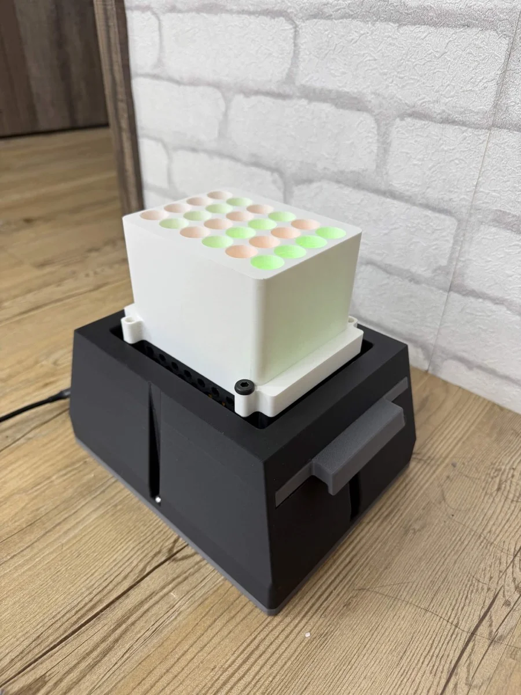
Forty LEDs were bought and each one was measured individually at 5 V in a fixed geometry; the twenty-four that fell into tight groups of four were kept and became the six channels, and the sixteen rejects were discarded. Both wavelengths were driven independently from one controller, and the enclosure blocks ambient light, which matters because ambient light would otherwise swamp the low-intensity conditions.
Two things in that description do not hold. The first is that the three tiers are intensity tiers: the measured green channels span 2.33 to 2.40 kLux, a spread of about three per cent, which is LED binning; the duty cycles that would separate the tiers are unrecorded. The second is well-to-well evenness. An acceptance criterion for it was written on 19 May and never measured, so the claim that every tube sees the same dose has no measurement behind it.
No induction curve exists. Nothing anywhere in this project shows PcpcG2 output changing with green light. The array has never run a CcaS/CcaR experiment on a live culture, and no dose, duration or intensity has ever been paired with an expression readout. Every statement about the light switch on this wiki, including the ones on Math Model where the optogenetic kinetics are simulated, is design intent carried forward from the literature. The state is designed, and this is the joint that breaks the chain in the middle.
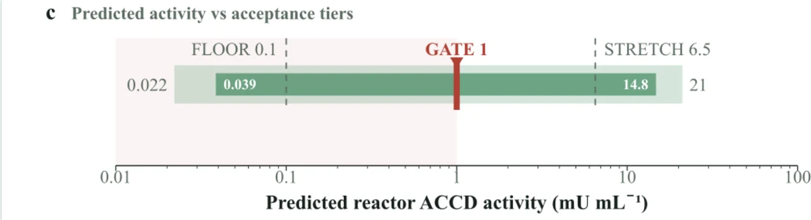
Because the switch has never been shown to switch, the ACC deaminase work that follows was carried out on the constitutive cassette, module J. The reactor, the blot and the plant sprays are all constitutive expression.
Culture monitoring
Can the inline photometer continuously monitor changes in culture density?
To monitor culture growth without repeatedly removing samples from the bioreactor, we developed an inline dual-beam photometer and evaluated its performance through long-term monitoring and independent turbidity calibration.
The photometer sits in the circulation loop: a sample channel through a short optical path and a reference channel taken before the sample, read every ten minutes and logged to a dashboard. The instrument, its four build iterations and its own open questions are on Hardware, and the trust layer that decides which readings to keep is on Digital Twin.
Continuous run
The long run started on 21 July 2026 at 22 °C and logged at ten-minute intervals into August, producing 2,671 valid rows. It is the longest unattended run the instrument has completed, and it is the run that exposed its limits. A process event appears between 120 and 160 h. An instrument event begins around 215 h, the sensor alarm fires at 216.3 h, and from 243.0 h the OD channel cannot be used at all. If the run is 434 h long then the OD trace is good for 243 of them and bad for the remaining 191.
A larger problem is that nobody wrote down what the instrument was looking at. The medium, the inoculum and which compartment the optics sat on are all unrecorded, and the wet lab archive contains no OD600 time series of any kind: the only OD600 values anywhere in it are four endpoint numbers from the two June reactor runs. So the figure shows an instrument running and says nothing yet about a culture.
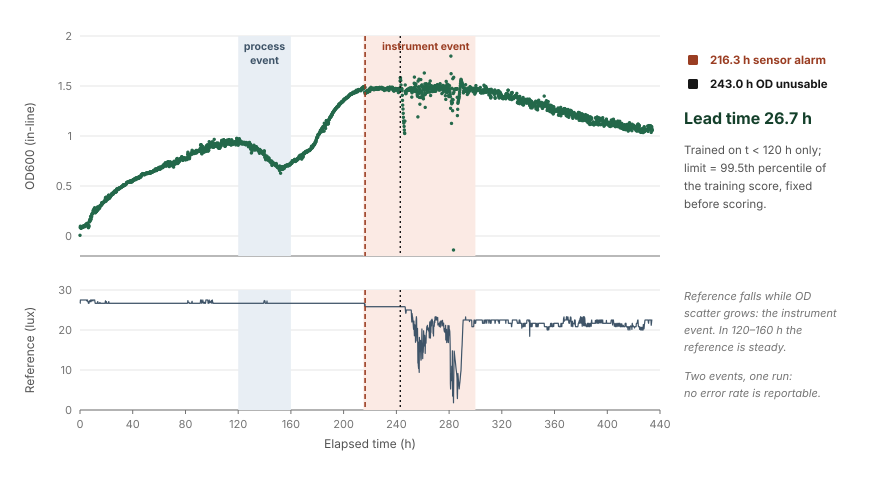
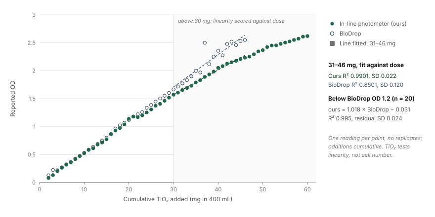
Turbidity calibration
The first calibration used TiO2 suspensions: a nonliving turbidity standard, which separates the optical response from anything the culture is doing.
Cumulative additions from 2 to 60 mg in 400 mL were read on our instrument and, in parallel to 46 mg, on a BioDrop benchtop spectrophotometer.
Against the benchtop instrument, over the twenty paired points where the BioDrop reads below 1.2, the fit is ours = 1.018 × BioDrop − 0.031 with R2 = 0.995 and a residual standard deviation of 0.024. Bland-Altman gives a bias of −0.019 with limits of agreement from −0.066 to +0.028. Against dose over the 31 to 46 mg range that both instruments cover, ours returns R2 = 0.9901 with a standard deviation of 0.022 and the BioDrop returns R2 = 0.8501 with a standard deviation of 0.120. At the top of the range our instrument is the steadier of the two. We had expected that comparison to run the other way.
Two limits belong with those numbers. There is one reading per point and no replicates. And TiO2 establishes that the optical response is linear in turbidity, which is a weaker statement than saying a reading maps onto a cell count; the iGEM measurement work on turning optical density into cell number sets out what that second step needs [5].
Silica calibration
We next repeated the calibration using SiO2 as a second particulate standard. Testing a second material allowed us to evaluate whether the relationship observed with TiO2 was reproducible with a different source of turbidity.
Monodisperse silica microspheres of 1 µm diameter and refractive index 1.46 give a scattering problem whose extinction can be computed in advance, and the van de Hulst approximation for those particles [6] puts 1 mg/mL of SiO2 at about OD600 2.3, so the measured slope can be checked against a theoretical one. The protocol is written in full, down to the sample-then-spike titration that holds volume constant at 50 mL and its closed form, Cn = 2.5 × [1 − (50/51)n] mg/mL over 45 to 60 cycles, with both inline units and the BioDrop read at every cycle.
The run has not happened. There is no SiO2 data in the archive: no regression, no R2, no graph, and the DBTL record for that cycle is a list of what is still needed. The method is on Experiments.
Protectant function
Do our protectants improve plant stress response?
Arabidopsis thaliana is the plant model, compared under normal conditions, under stress, and under stress with protectant added. The experiments run from tightly controlled agar plates toward a hydroponic system closer to how ReLeaf would be applied. Each trial carries four arms, no salt and no protectant, salt alone, protectant alone, and salt with protectant, at the salt and protectant concentrations that trial set.
The full experimental history, all eight sets, the protocols and the failures are on Plants.
Salt dose response
Experiment set 6 is the one solid result. Arabidopsis thaliana seedlings were vernalised on 19 July, moved to the growth incubator on 23 July, and root length was measured from images on 3 August, six days after transfer, with nine seedlings in every group.
| NaCl | No trehalose, mean ± SD | 5 mM trehalose, mean ± SD | n per group |
|---|---|---|---|
| 0 mM | 74.95 ± 2.77 mm | 71.96 ± 3.13 mm | 9 |
| 75 mM | 34.77 ± 4.41 mm | 29.18 ± 8.95 mm | 9 |
| 100 mM | 11.00 ± 4.07 mm | 14.71 ± 5.56 mm | 9 |
| 150 mM | 1.36 ± 1.09 mm | 2.53 ± 0.94 mm | 9 |
The left-hand column is a clean monotonic dose response with non-overlapping spreads, and every one of these eight numbers is a mean of nine individually measured seedlings. Salt at 75 mM leaves a root at 46 per cent of control and 150 mM leaves it at about two per cent. That sets the operating window for any rescue experiment, and it is the number Math Model uses to calibrate injury.
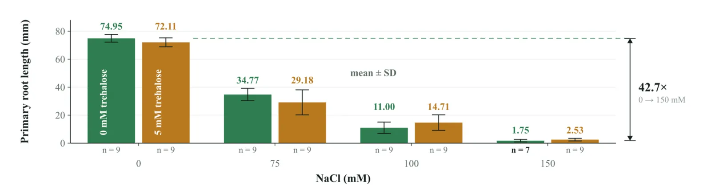
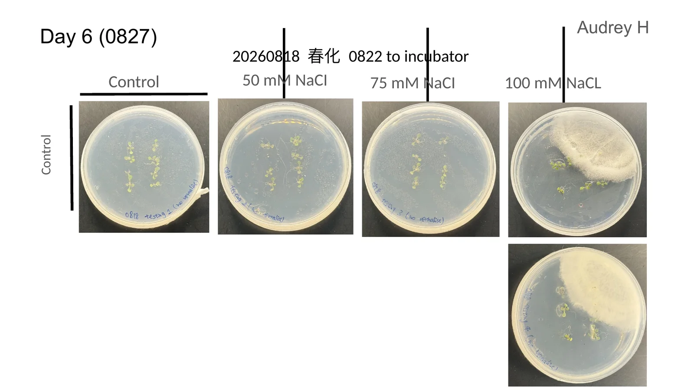
Rescue attempts
Six experiment sets used trehalose as a reference osmolyte, and none of them produced a reliable rescue. In set 6, trehalose moved 100 mM from 11.00 to 14.71 mm, a gain of 3.71 mm against a pooled standard error of about 2.3, and it moved 75 mM the other way by 5.59 mm against a pooled standard error of about 3.3. Only the 150 mM pair comes close to separating, and that is a gain of 1.17 mm on roots that are barely growing. Different sets also picked different best doses, 5 mM in one trial of set 5 and 10 mM in the other, and set 6 had already been designed around 5 mM before that second analysis came back. Trehalose is the control we run to ask whether the assay can see a rescue at all, and after six sets we cannot call it a validated positive control.
Set 7 tested a commercial peptide preparation from CH Biotech at 1:500, in pre-treatment, co-treatment and after-treatment timings on horizontal plates. Its fourth trial, on 5 September, is the only internally coherent dataset in the whole peptide series: twelve arms, three replicates each, read at 649 and 665 nm in 95 per cent acetone with the Lichtenthaler coefficients. The controls behave, giving a clean chlorophyll ladder of 0.2986, 0.2479 and 0.0690 per extract across 0, 75 and 100 mM NaCl. At 100 mM the co-treatment and after-treatment arms read 0.2398 and 0.2564, about three and a half times the salted control, which is the largest protectant effect anywhere in our plant data.
The same plate carries its own failure. The co-treatment arm's no-salt control came in at 0.0318, lower than every salted arm on the plate, which means the internal control for that arm did not work and the arm cannot be trusted. Pre-treatment is worse than control at both salt levels. There is one plate per arm, so the whole table is an n of one biologically and the three replicates measure pipetting. The three and a half fold effect needs a repeat with a working control before it can be claimed.
Our own designed protectants are absent from this section. LEA14 and BoPep4 have never been applied to a plant. Module G failed and module H produced no clone, the SamyQ fusions were only assembled at Level 1 at the end of August, and no plant experiment in the archive uses either. A four-way protectant comparison cannot be written from this evidence.
Heat stress
Heat was run twice, once on vertical agar and once hydroponically. The agar run put seven-day-old seedlings into a 37 °C chamber on 15 August in four groups, control plus the three peptide timings, with the peptide sprayed onto the co-treatment group on 16 August and the after-treatment group on 17 August, and observations on 18, 19 and 21 August. The chlorophyll sheet for that run reads control 0.626 mg/g against 0.348, 0.337 and 0.335 for the three treated groups, which would say the peptide halved chlorophyll in every timing. We do not believe that number and we are not publishing it as a result: in the control row of that sheet the OD645 and OD663 columns appear transposed relative to every treated row, and a transposition would produce exactly this pattern.
Hydroponics
The hydroponic system allowed plant roots to interact directly with the treatment solution and provided a closer approximation of how protectants could eventually be delivered through irrigation or nutrient circulation.
Salinity set 1 applied 100 mM NaCl to thirteen-day-old plants across four boxes: control, pre-treatment three days before the stress, co-treatment at the same time, and post-treatment three days after. A second set ran heat on the same four-arm design, with three replicate reads per box.
Neither set can be attributed to a protectant. No file in the archive names what went into the boxes. The record describes four arms and calls the agent "protectant" in every sentence, and the conditions section for the heat set stops at the word "Conditions:" with nothing after it. Two complete chlorophyll datasets exist and nobody can say what they measured.

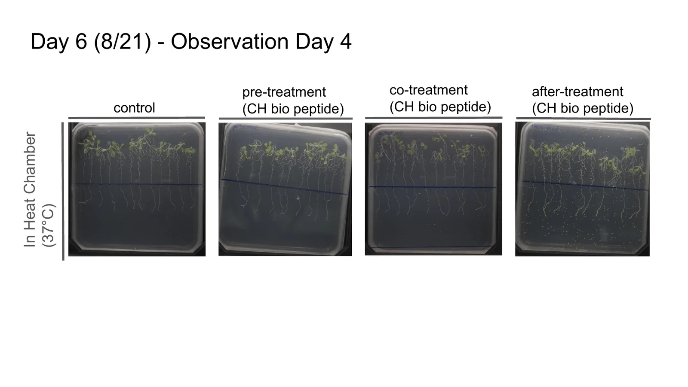
Salinity set 1 does demonstrate the normalisation problem. Normalised to fresh weight the control wins at 0.0828 mg/g and co-treatment comes last at 0.0617. Normalised to plant count, co-treatment wins at 1.251 and the control drops to third at 0.714. Those are the same four samples ranked in opposite orders, and the reason is that the fresh weights span 0.0503 to 0.2029 g, so dividing by a small stressed mass flatters it. With one box per arm and one reading per box, the table says nothing about treatment timing. It does show that a chlorophyll number means little without its normalisation. Every chlorophyll figure quoted on this page is un-normalised or is given with its normalisation named.
Enzyme activity
An enzymatic activity assay for ACC deaminase [4] would sit between protein expression and plant phenotype, as an independent check that the protein we made was functional. No such assay exists. There is no ACC deaminase activity measurement, no ELISA, and no enzyme kinetics anywhere in the wet lab archive. Everything labelled ACCD in the plant data is a phenotype test: a preparation is applied to seedlings and the plates are photographed.
Experiment set 8 is that test, and it is the newest plant work. Seeds were vernalised on 18 and 21 August, moved to the incubator on 22 and 25 August, and photographed roughly daily through 5 September, with control, 75 and 100 mM NaCl, and three ACCD treatment timings. Both decks are photographic logs. In the master experiment index, every column for set 8 except its number and its purpose is empty: no date, no duration, no salt concentration, no dose, no protocol, no root length, no fresh weight. The one numeric readout that appears to exist is a chlorophyll sheet, and it is not usable: three replicates of one extract read 0.106, 0.830 and 1.092, a tenfold spread within one sample, on five of its twelve rows, and the two workbooks then differ on those same rows by factors of seven to sixty-six.
The material was a problem too. The pretest was abandoned after bacterial contamination, a Western blot then showed the B. subtilis preparation carried no detectable ACC deaminase, and trial 1 met bacterial growth again. Experiment set 8 is running and it has produced no number. The project's headline protectant has not been shown to help a plant.
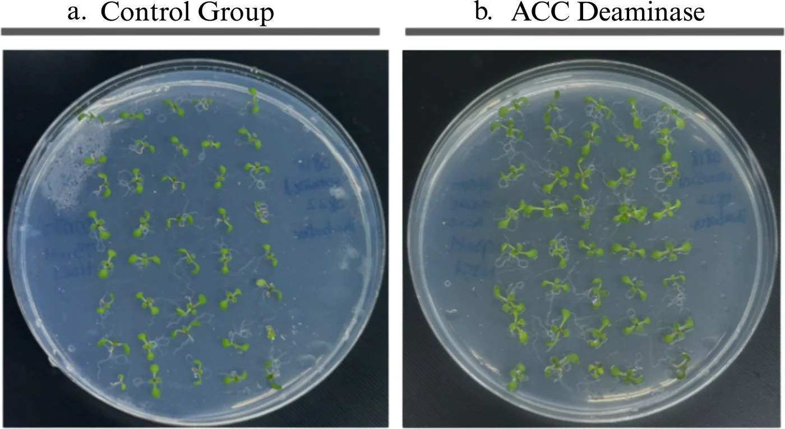
On the expression side the answer is negative. A Western blot run on 24 August carried a single band, sharp and saturated, at roughly 41 kDa, and it was in the lane loaded with the 18 August culture. The lane loaded with the 23 August culture, which is the material that had been sprayed onto plants, is blank. The sprays of that week were therefore not a protectant treatment.
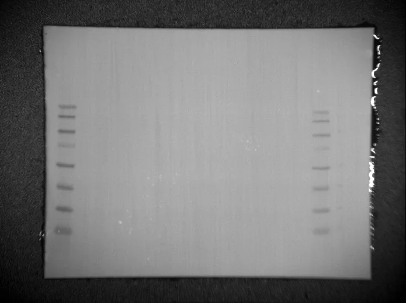
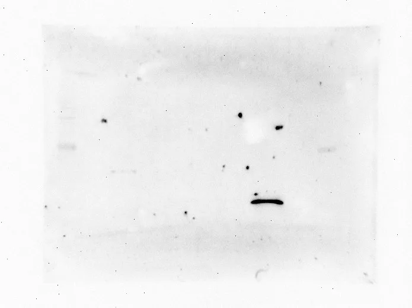
Whole system
Can the bioreactor produce and release ACCD?
The reactor is a perfusion loop: a PES hollow-fibre cartridge of 0.2 µm rating [7] with about 200 mL of lumen volume, a medium reservoir, and a peristaltic pump circulating between them. Cells live in the lumen, protein passes the membrane into the shell, and the shell side is what a farmer would eventually draw from. The engineering of it, and the hydraulics that go with it, are on Hardware.
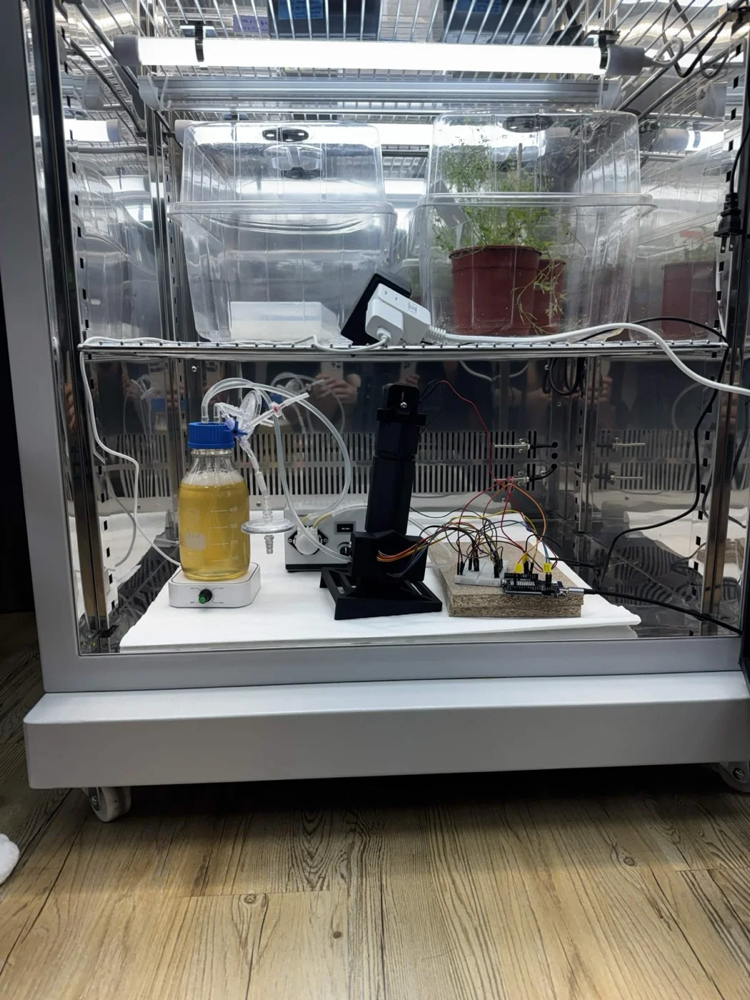
Growth in the reactor
Two versions were run. Version 1, on 6 June, put 300 mL of LB and 20 mL of overnight culture through the loop at 94 mL/min and stopped early when medium leaked at the pump. It ended at OD600 0.304 in the loop against 0.480 in a serum-bottle control, and a regression on the lumen series gives a mean OD of 0.142 with a slope of −0.0024 OD/h at p = 0.759. The culture in the fibre lumen did not grow at 22 °C while the control at the same temperature did, so the difference was the reactor and not the temperature. Oxygen starvation, cumulative shear and adhesion to the fibre walls are all still live explanations and none has been eliminated.
Version 2, on 14 June, added magnetic stirring at 200 rpm, a sampler between the reservoir and the pump, and ran at 37 °C. It reached plateau at OD600 0.8 to 0.9 in about two hours, against a shake flask reaching 0.6 to 0.8 in about four and a half hours. Under stirring at 37 °C the reactor beat the flask on both time and final density. The team recorded the lesson as: stirring is essential. It also explains the version 1 result.
The 102.4 hour run
Run 4, started on 1 September with B. subtilis 168 secreting ACC deaminase from a constitutive promoter, on the full-length hollow fibre module, was logged in two files: 3.2 h up to OD600 0.24, then 10.2 h unrecorded, then 102.4 h without an interruption. That second file is the one place on this page where growth, crossflow and transmembrane pressure are recorded together as a continuous series rather than as spot readings. OD600 rises from about 0.8 to 3.8 across the run. Crossflow is held near 371 mL/min, with brief dips where the dashboard logs an event, and transmembrane pressure stays inside a band of about ±0.1 bar throughout, which suggests the membrane was not fouling on the timescale of the run.
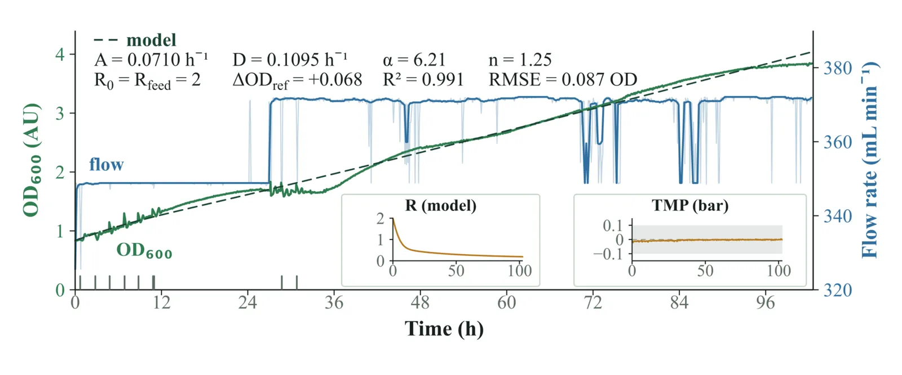
Two cautions apply. The fit is a model fitted to one run, not a prediction tested against a second one, and the OD axis is the inline photometer's own reading, which section 5 establishes as linear in turbidity rather than tied to a cell count. What the run does close is whether the loop can be left alone: it can, for four days.
Pressure and flow
The pump was calibrated across its range in three trials per setting. Setting 10 gives 103, 100 and 98 mL/min, an average of 100.3; setting 20 gives 314 and setting 50 gives 979. Transmembrane pressure was then logged against flow on 13 and 14 August. Pressure rises monotonically with flow in all three of those runs, over roughly 110 to 420 mL/min, and the zero-flow intercept of the first run is 0.0327 bar.
Those workbooks record nothing about stability over time. Every row in them is a spot reading at a pump setting, with no time column and no repeat series, so the continuous record above is the only evidence for pressure and flow holding steady, and it is one run. What the data do show is a reproducibility problem: at about 405 mL/min the three runs read 3.73, 1.13 to 1.26, and 3.22 to 3.52 psi. A threefold spread at the same flow, with no condition labels and no membrane identifier to explain it, is the thing to resolve before any transmembrane pressure number is published.
Protectant release
After validating individual components, we tested whether ACCD produced inside the microbial culture could be detected in the bioreactor output pathway. We operated the bioreactor using constitutive ACCD expression and collected samples from different points in the system.
Release has two halves: the protein has to leave the cell, and it has to cross the membrane. The first half has one piece of evidence and it is positive. On 2 August a Western blot of B. subtilis carrying the ACCD construct was run in three fractions side by side, total pellet, soluble pellet and supernatant. Bands sit between 35 and 40 kDa in the supernatant lanes and the two pellet lanes are effectively blank. That is the only fractionation evidence in the archive that the Csn secretion tag does what it was chosen to do, and the whole reactor design assumes it.
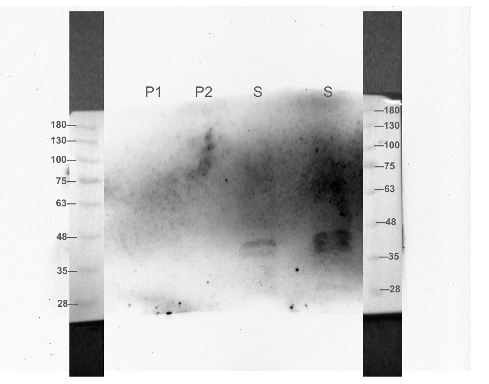
Whether the protein then crosses the membrane is not settled. The reactor was run on the constitutive ACCD cassette and sampled every two hours at 14, 16, 18, 20, 22, 24, 40, 42 and 44 h, in three fractions: lumen cell lysate, lumen medium and shell medium. The blot used a mouse anti-His primary antibody.
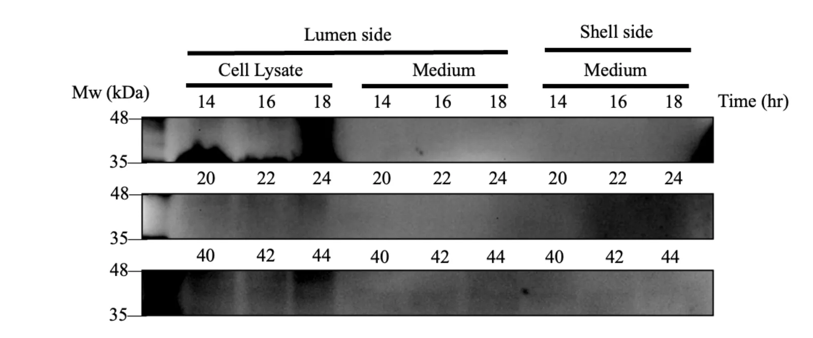
The reactor has a version history running to V7 on paper, with a spectrophotometer, a magnetic pump, pressure and pH sensors and self-cleaning listed against the later versions. Those are intentions. The version record has Design, Build, Test and Learn entries for V1 and V2 and bare headings under V3, V4 and Final, and every bioreactor measurement in the archive comes from V1 and V2, in June.
Containment
Do the engineered cells stay on their side of the membrane?
The hollow fiber membrane physically blocks bacteria from leaving the lumen side, since the pore size of the membrane (0.2 µm) is much smaller than the cell size of B. subtilis. To validate this theory, a simple test was conducted. When the bioreactor was running, we collected medium from the lumen and shell sides and plated them. After 24 h at 37 °C, the samples were compared with each other. No detectable B. subtilis colonies were observed in the shell-side sample under the tested conditions.
During the version 1 run on 6 June, 2 mL of shell-side liquid was spread on an LB plate and no colonies grew; a later run was plated from both sides and photographed after 24 h at 37 °C. Those two platings are the entire containment record for this project, and the first of them comes from the run that stopped early when medium leaked at the pump. There is one plating per run and no replicate within a run, and for the June plate the incubation time and temperature were not recorded.
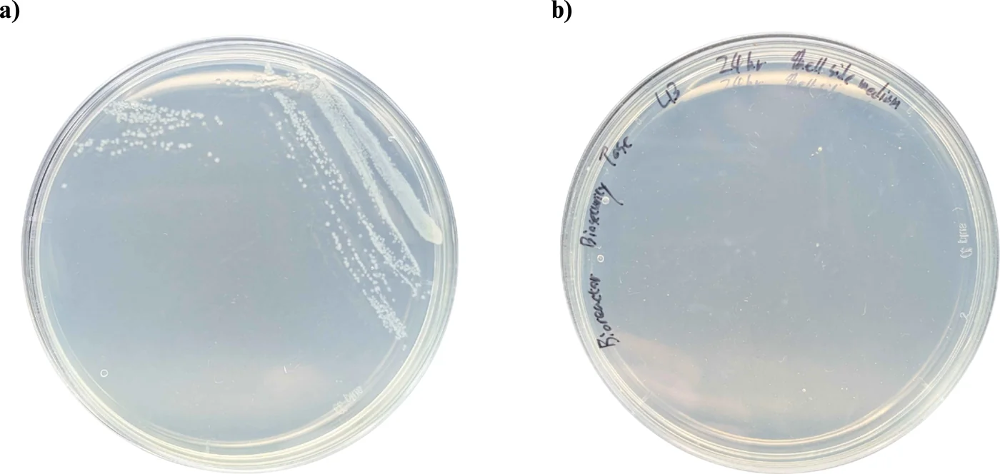
The geometry argument is weaker than it sounds. Our own pages give B. subtilis as a rod of 1 to 2 µm in the containment argument and as a 0.8 by 3 µm rod in the fouling model, and neither figure carries a citation. A 0.2 µm microfiltration membrane also passes debris and vesicles in the 20 to 200 nm range along with the protein, so the barrier works at the scale of a cell. One plate with no colonies is consistent with retention at a detection limit nobody recorded.
What the chain does not close
- Nine Level-1 modules assembled and confirmed by three independent methods, with colony PCR, amplicon verification and sequencing dates on record for each, and three failures named.
- A Level-2 device junction-checked on three independent clones across all three junctions in one gel, 19 September, at 375, 632 and 661 bp.
- An inline photometer that ran unattended for weeks at ten-minute intervals and produced 2,671 valid rows.
- A turbidity response linear against a commercial spectrophotometer, ours = 1.018 × BioDrop − 0.031 at R2 0.995, and steadier than that instrument above 30 mg of TiO2.
- A salt dose response in Arabidopsis at day 6, 74.95, 34.77, 11.00 and 1.36 mm across 0, 75, 100 and 150 mM NaCl, nine seedlings per group, with non-overlapping spreads.
- ACC deaminase in the supernatant lanes and absent from both pellet lanes, 2 August, which is one blot's worth of support for the secretion tag.
- A reactor that reaches OD600 0.8 to 0.9 in about two hours under stirring at 37 °C, against a shake flask at 0.6 to 0.8 in about four and a half hours, one run each.
- A pump calibrated across its range, setting 10 at 100.3 mL/min over three trials.
- One shell-side plating that grew no colonies.
- Any light induction. No experiment anywhere shows PcpcG2 output changing with green light. Closed by: one dose series on DiOPAL with an expression readout, green against dark.
- That the array's tiers are intensity tiers, or that wells receive an even dose. The green channels differ by three per cent and evenness was never measured. Closed by: a lux map across the 24 positions and the duty cycles written down.
- That a photometer reading is a cell count. TiO2 gives linearity, not biomass, and the OD channel failed at 243 h of its own longest run. Closed by: the SiO2 titration that is already written, plus a paired OD600 series against plate counts.
- That the long run followed a culture. The medium, inoculum and compartment are unrecorded and no OD600 time series exists in the wet lab archive. Closed by: producing the log file and saying what was in the loop.
- Any Level-2 sequence. Both devices are junction-checked and the sequencing date is blank for both. Closed by: sending them.
- Any protectant rescue. Six trehalose sets and four peptide trials, no effect that survives its own controls. The one large effect, three and a half fold at 100 mM, sits on a plate whose no-salt control failed. Closed by: a powered rescue experiment at 75 to 100 mM with a protectant that has an activity measurement behind it.
- Anything from the hydroponic runs. Two complete chlorophyll datasets and no file names the agent that was added. Closed by: a named reagent field on the box sheet, retrospectively if anyone remembers.
- That LEA14 or BoPep4 does anything to a plant. Neither has ever been applied to one. Closed by: expressing, purifying and applying them.
- Any ACC deaminase activity. There is no activity assay, no ELISA and no kinetics in the archive. Closed by: a ninhydrin or alpha-ketobutyrate assay on the purified fusion.
- That the sprayed culture contained protectant. The 24 August blot reads negative on the 23 August culture. Closed by: blotting every batch before it is applied.
- That protectant crossed the membrane. The reactor blot has two opposite readings on record. Closed by: computing the fusion mass, then re-reading the blot, with a positive control lane.
- Any pressure or flow stability. Every reading is a spot value, and three runs disagree threefold at the same flow. Closed by: one continuous transmembrane pressure log over a full run.
- A containment figure. One 2 mL plate, no replicate, no LRV, and no citation for the cell dimension the argument uses. Closed by: plating shell fluid at every sampling point of the next run.
- Anything about WB800. Every reactor number on this wiki is strain 168, run 4 included; the first WB800 reactor run ends on 9 October. Closed by: running the comparison.
- An end-to-end run. No forecast has driven a light, no light has driven expression, and no reactor output has reached a plant. Closed by: the four items above it, in order.
The single experiment that would move this project furthest is the induction curve in section 4, because several of the items on the right wait on it.
References
- Castillo-Hair, S. M., Baerman, E. A., Fujita, M., Igoshin, O. A., & Tabor, J. J. (2019). Optogenetic control of Bacillus subtilis gene expression. Nature Communications, 10, 3099. doi:10.1038/s41467-019-10906-6
- Haller, D. J., Castillo-Hair, S. M., & Tabor, J. J. (2025). Optogenetic control of B. subtilis gene expression using the CcaSR system. Methods in Molecular Biology, 2840, 1 to 17. doi:10.1007/978-1-0716-4047-0_1
- Caro-Astorga, J., Rogan, M., Malcı, K., Ming, H., Debenedictis, E., James, P., & Ellis, T. (2025). SubtiToolKit: a bioengineering kit for Bacillus subtilis and Gram-positive bacteria. Trends in Biotechnology, 43(6), 1446 to 1469. doi:10.1016/j.tibtech.2025.02.004
- Singh, R. P., Jha, P. N., & Glick, B. R. (2015). Biochemistry and genetics of ACC deaminase. Frontiers in Microbiology, 6, 937.
- Beal, J., Farny, N. G., Haddock-Angelli, T., et al. (2020). Robust estimation of bacterial cell count from optical density. Communications Biology, 3, 512. doi:10.1038/s42003-020-01127-5
- van de Hulst, H. C. (1957). Light Scattering by Small Particles. Wiley. Source of the anomalous-diffraction approximation used to predict the SiO2 extinction efficiency in section 5.
- Biophsep mPES Minilab hollow-fibre module, HF-E-MI-M020-10-60-P. Vendor specification: 0.2 µm, 150 cm², 8 fibres, 1.0 mm bore, 0.25 MPa maximum transmembrane pressure.
- LEIRONG ZP4000-N79H peristaltic pump, N-tube head. Vendor specification: 230 to 2,600 mL/min. Our own calibration is in section 7.